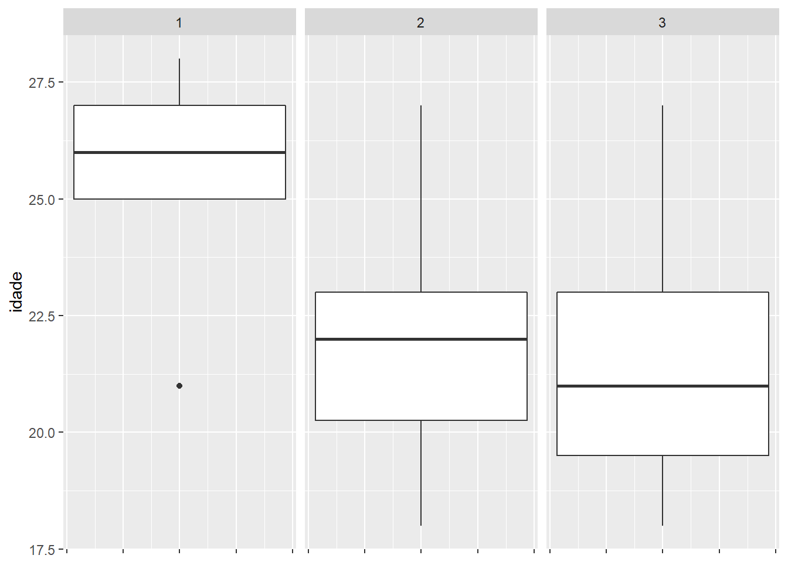
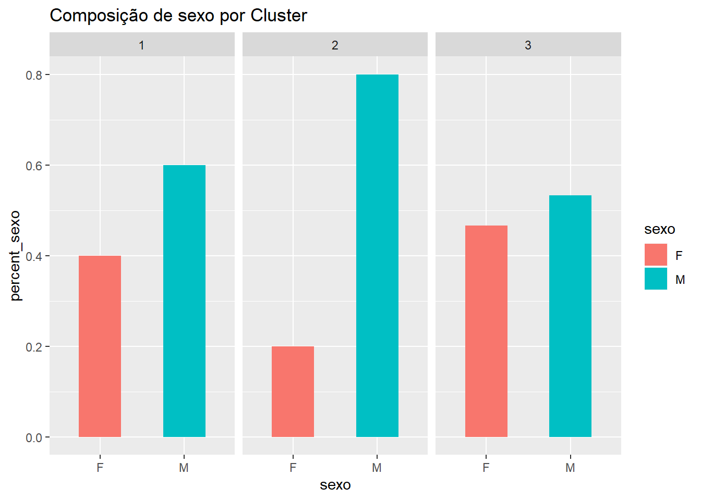

Conclusão
Outubro de 2019
- Questões
- a) Houve concentrações de respostas em categorias únicas ou houve boa diversidade entre os respondentes?
- b) Houve correlação entre as variáveis assinaladas em vermelho? Como isso afeta a Cluster Analysis?
- c) É necessário padronizar as variáveis?
- d) Faça Cluster Analysis (Método Hierárquico AGNES) com as variáveis assinaladas em vermelho. Use distância euclidiana. Use Ward e Average (compare os resultados utilizando as métricas que você aprendeu da função cluster.stats do pacote fpc).
- e) Quantos grupos foram obtidos?
- f) Interprete os grupos assim formados, usando somente as variáveis assinaladas em vermelho.
- g) Verifique se sexo ou idade discriminam bem os grupos.
- h) A aplicação do método K-Means muda a composição dos grupos?
Questões
Responda as seguintes questões, justificando sua resposta com base em fatos, dados, gráficos etc:
a) Houve concentrações de respostas em categorias únicas ou houve boa diversidade entre os respondentes?
Conforme apresentado no Relatório de Exploração Inicial dos Dados, a pesquisa realizada trouxe boa diversidade entre os respondentes.
b) Houve correlação entre as variáveis assinaladas em vermelho? Como isso afeta a Cluster Analysis?
Sim, conforme domonstrado no correlegrama do Relatório de Exploração Inicial dos Dados, as correlações entre as variáveis mais expressivas foram:
- casamento_civil e cansar_cerimonia
- emocionar e cansar_cerimonia

c) É necessário padronizar as variáveis?
Não é necessário padronizar as variáveis, pois todas já estão na mesma escala de 1 a 5, conforme demonstrado no Relatório de Exploração dos Clusters.
d) Faça Cluster Analysis (Método Hierárquico AGNES) com as variáveis assinaladas em vermelho. Use distância euclidiana. Use Ward e Average (compare os resultados utilizando as métricas que você aprendeu da função cluster.stats do pacote fpc).
Conforme apresentado no Relatório de Exploração dos Clusters, utilizando o método ward temos a melhor divisão de cluster em 3.
Dendrograma utilizando o método ward 
Utilizando o método average, embora não fique tão evidente, também temos a melhor divisão de cluster em 3.
Dendrograma utilizando o método average 
Embora os métodos sejam diferentes, como eles classificaram as observações nos mesmos clusteres, as métricas resultantes utilizando a função cluster.stats do pacote fpc foram exatamente iguais.
Vale lembrar que a decisão de número de clusters também impacta no resultado das métricas. Importante salientar que, embora todos os métodos tenham obtido os mesmos resultados, isso não significa que com outras observações o resultado também seria o mesmo.
e) Quantos grupos foram obtidos?
Em todos os algoritimos a melhor quantidade de clusters foi 3.
f) Interprete os grupos assim formados, usando somente as variáveis assinaladas em vermelho.
Cluster 1: Abaixo as respostas das observações classificadas no cluster 1:

Cluster 2: Abaixo as respostas das observações classificadas no cluster 1:

Cluster 3: Abaixo as respostas das observações classificadas no cluster 1:

g) Verifique se sexo ou idade discriminam bem os grupos.
Idade: conforme podemos observar existe sim uma nítida diferença na idade média dos entrevistados classificados no cluster 1 em comparação com os demais clusters.
A idade do cluster 1 é de aproximadamente 4 anos de diferença.
ggplot(data = target_data) +
geom_boxplot(aes(y = idade)) +
facet_wrap(~cluster_id) +
theme(axis.text.x = element_blank())
Sexo: conforme podemos observar existe sim uma nítida diferença na composição de sexo dos entrevistados classificados no cluster 2 em comparação com os demais clusters.
No cluster 2, 80% dos entrevistados são do sexo masculino, e nos demais clusters a proporção é mais equilibrada.
ds_sexo <- target_data %>%
group_by(sexo, cluster_id) %>%
summarize(qtd_sexo = n())
ds_cluster <- target_data %>%
group_by(cluster_id) %>%
summarise(qtd_cluster = n())
ds_percent <- left_join(ds_sexo, ds_cluster, by = 'cluster_id') %>%
mutate(percent_sexo = qtd_sexo / qtd_cluster)
ggplot(ds_percent, aes(x = sexo, y = percent_sexo, fill = sexo)) +
geom_bar(stat="identity", width = .5) +
labs(title = "Composição de sexo por Cluster") +
facet_wrap(~ cluster_id)
h) A aplicação do método K-Means muda a composição dos grupos?
Não, ambos os métodos classificaram as observações nos mesmos clusters para este conjunto de dados.
Desta maneira todas as métricas de avaliação de clusters se mantem as mesmas.